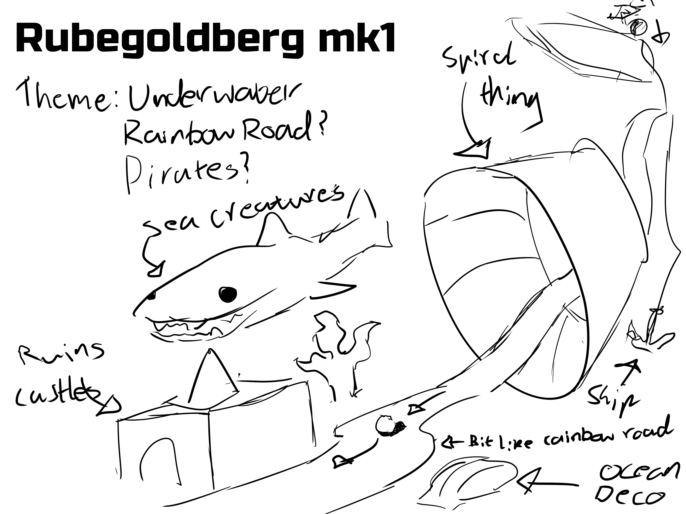
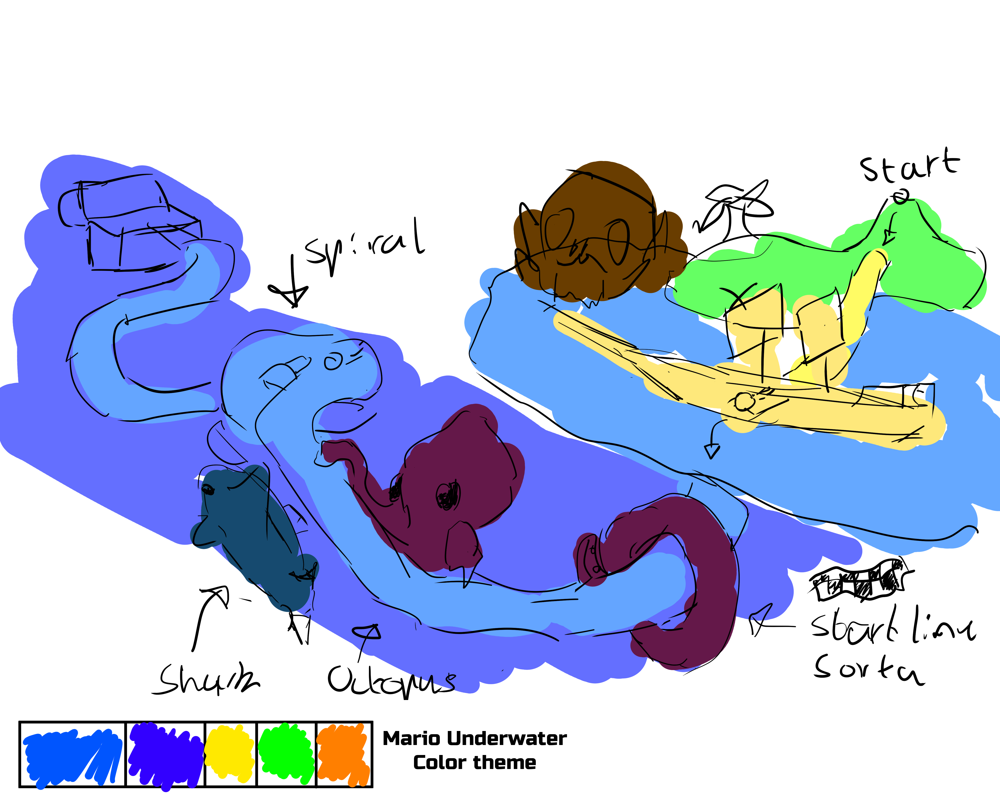
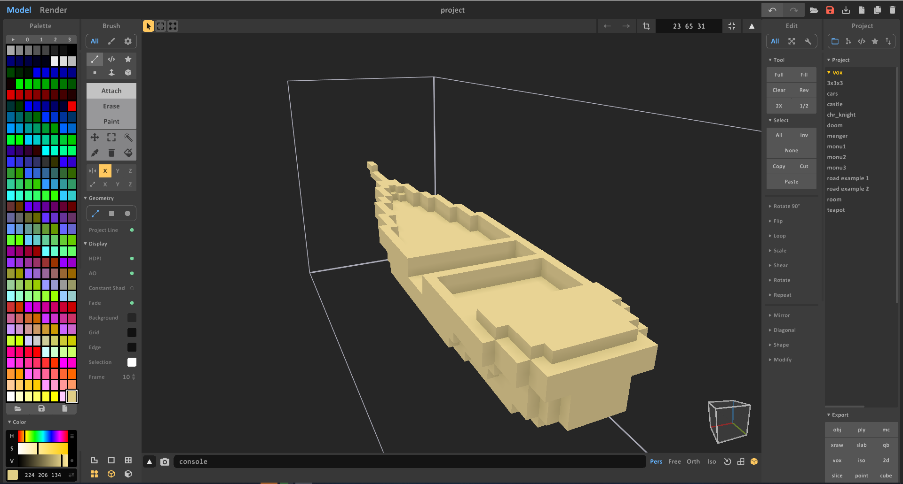
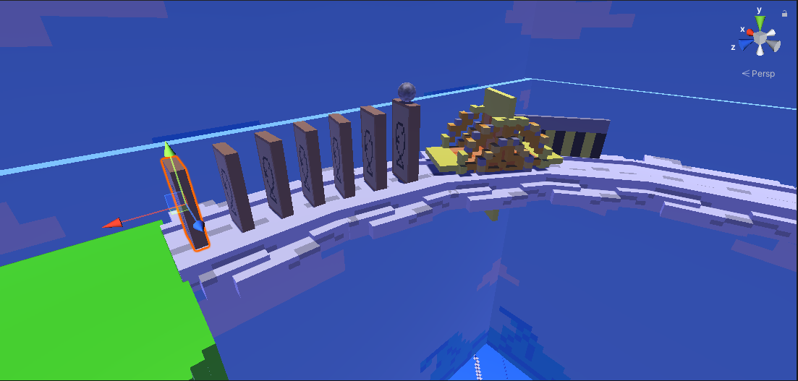

Assignment 3
Unity / Space
Assignment 3 is a 3D virtual scene that replicates the motions of a Rube Goldberg machine. We also learn how to use Unity to create scenes.
P l a n n i n g
Throughout my planning stage, I initially was already behind since I had some other issue, so I had a late start and needed to make something compelling in order to keep my motivations high, I knew unity was the least favoured task among previous students as it really tested them and their skills. So I decided to opt for a water theme to bring out the island elements and underwater to create depth. This also meant I had to use space in a smart way for it to even work, meaning my end result would have good qualities for even just working.
Another detail I planned to include was, giant creatures that move through scripts, this presents some interactions with the environment from outside the track to inside. Also this would present a scale of depth between you the ball and the world around you, making you feel small considering every movement to evade being stopped from reaching the goal.
P r o c e s s
The process was definitely very draining, there was a lot of things to check and tick, making sure every setting was the same and also scripting codes that barely existed on youtube was a drain, Unity is popular but also not enough for the areas where its most needed, I still remember watching countless tutorials alongside my unity project and sitting for hours at a time. However, in the end it paid off and I finally understood that Unity wasn't an easy thing to accomplish. Alongside unity, I also learnt how to use Magica Voxel to create most of my models and assets you see within the video.
P o s i t i v e s
Some bright stuff about the unity project was, I managed to understand game development a bit better through the interface and process, it definitely was super tedious and made me realise heaps of things such as being patient with results in here. You need a good steady foundation but that all later ties in together creating a playable system.
Another positive was that I was able to test all my skills in creating a digital environment with settings in tangent with one another, I learnt how to use programs outside of expectations and it allowed my quickly and creatively pave the path I wanted to see my project become. It was an amazing feeling decorating my little island and making it feel like a pixel game you can explore. So that definitely was a bonus for me.
N e g a t i v e s
As for one of the last assignments, it definitely pushed the boundaries on me as a person, however now I know what to do with future projects where times become extremely tough. Especially animating the camera in this program was painfully annoying, that's because if I wanted to animate the last few mins/seconds of my scene, I'd have to wait out the first 1 min and 30 seconds before finally seeing where I need to move the camera. Another annoying part was trying to understand why my scripts weren't working, it was a lot of tedious trial and error.